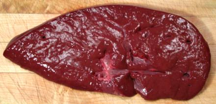

Beef Liver

A beef liver is very much larger than you probably want for household
use, so they are always sold sliced crosswise. Liver is held
particularly compatible with onions in just about all beef eating
cultures, so it's not easy to find a recipe that doesn't include them.
The photo specimen was 11 inches long, 5 inches wide and 1 inch thick,
weighing 1 pound 5 ounces.
More on Beef Innards
Buying:
Liver is still fairly common in meat markets, but
most available in ethnic markets serving Eastern and Southern Europeans,
Mexicans and Middle Easterners.
Prep:
The way they're sold around here there isn't much
to do except remove a little plumbing, slice and rinse well in salted
water - unless you need to kosher them.
Cooking:
Liver is usually cut into smallish pieces and
cooking time is kept very short, as liver tends to toughen with longer
cooking. This is, of course, impossible with Jewish recipes since the
liver is already well overcooked by the koshering process (see below).
Koshering:
If you are using liver in a Jewish
recipe, this procedure is necessary to reproduce the authentic flavor
of the dish. If you are Jewish and want to keep "sort of kosher", the
basic procedure here should do fine, but if you're keeping a hard
core kosher kitchen there are a lot more details, and you should consult
a paper by an authorized rabbi. The main point is this: blood is
forbidden for Jews, and liver is so saturated with blood koshering by
salt is considered insufficient.
- If you're really doing kosher, you must buy your liver from a kosher
butcher to make sure the animal has been killed and dismantled in
accordance with kashrut laws.
- If koshering a whole liver (this would be the case with a lamb liver),
you need to make sufficient cuts through the outer membrane for the
juices to flow through.
- The liver may be salted or no. If it is, usually just enough salt is
applied for proper flavor in cooking.
- Flame is required. Preferably use a gas or charcoal grill with the
flame below the grate, but with care it can be done in the broiler. If
broiling, use a grate in a pan so that all liquids drain away and
cannot touch the liver. In either case, you must roast the liver all
the way through, turning once to get it flamed on both sides. There
must be no dark brown color in the center. It is not necessary to char
the surface, but some recipes do call for that.
- The liver may now be cut in whatever way is appropriate to the recipe
being used.
- Caution: Once a grate, pan, tongs or other tools and utensils
have been used to kosher liver, they must not be used for
any other purpose nor come in contact with tools used for other
purposes.
- Caution: If broiling, you must be careful no liquid from
the liver splashes on the walls of the broiler or any other part of the
stove, or you stove may thereafter be used only for koshering liver.
There is probably some rabbinical procedure to restore the stove to
general use, but it probably involves sand blasting and a substantial
donation to the temple.
- Fortunately we Pagans and Christians can disregard the above
cautions.
ab_liverz 101127 - www.clovegarden.com
©Andrew Grygus - agryg@clovegarden.com - Photos
on this page not otherwise credited © cg1
- Linking to and non-commercial use of this page permitted